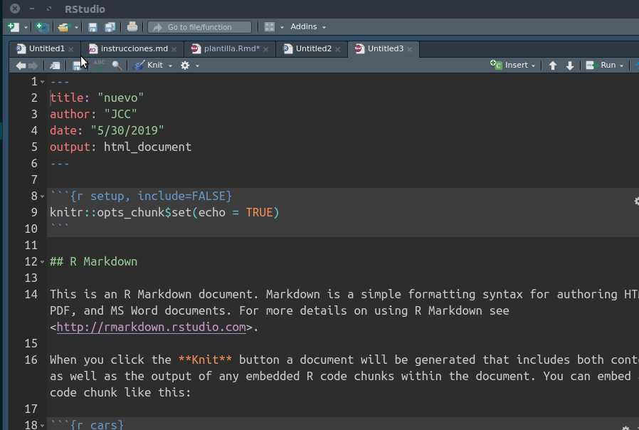

1.4 Rmarkdown / Knitr
Excelente referencia: RMardown for scientists
Rmarkdown es una versión de Markdown pero con algunas características especiales. La principal de ellas es que, además de la escritura en Markdown, permite incorporar código y resultados de R en un mismo documento, a través de la librería knitr (en español tejer).
Knitr es una librería de R que convierte (compila) documentos escritos en Rmarkdown y que combinan texto y análisis hacia otros formatos. Esto es posible ya que reconoce marcas de edición y código de análisis y permite su transformación a formatos como pdf, word y html. Una representación del flujo según Healey es la siguiente:

El documento central de trabajo es uno en formato .Rmd (Rmarkdown), que combina texto en Markdown y código R, lo que se detalla más abajo. La librería Knitr hace la transformación de este documento a formatos como html y/o pdf, para lo cual utiliza el convertidor pandoc.
No es necesario conocer al detalle todos los elementos de este flujo para hacer funcionar un documento dinámico, sino básicamente dos: 1) Markdown, y 2) Trozos de código. Vamos por parte.
1.4.1 Trozos (chunks) de código
La caracteristica principal de Knitr es que identifica las secciones de código en la hoja y los ejecuta mediante R. Estos trozos de código se encuentran delimitados de la siguiente manera:
```{r}
4+5
```Es decir, todo lo que comience por ```r y termine con ``` será identificado como código de análisis (el atajo para generar un chunk en RStudio es ctrl+alt+i)
1.4.2 Tipos de chunks
En general hay cinco opciones básicas de edición relacionadas con chunks y su visualización en el documento final. Esto se maneja mediante opciones que aparecen al inicio en el chunk, luego de la letra r
- código y resultado (opción por defecto)
```{r}
1 + 1
```Resulta
## [1] 2- solo código, ocultando resultados:
```{r, results='hide'}
1 + 1
```Resulta:
- solo resultado
```{r, echo=FALSE}
1 + 1
```Resulta:
## [1] 2- ni código ni resultado
{r echo=FALSE results='hide'} - resultado “tal cual como es”:
{r results='asis'}se utiliza principalmente para comandos de generación de tablas, que arrojan un código que luego puede ser interpretado por otro lenguaje (por ejemplo, html)
1.4.3 Trabajando con documentos dinámicos en RStudio
RStudio es principalmente un editor para análisis de datos con R, pero últimamente ha ido incorporando herramientas para reportes dinámicos. Para ello utiliza un tipo de archivos con extensión Rmd que significa Rmarkdown. Y en este contexto Rmarkdown es la forma en que Rstudio identifica los archivos que combinan texto y código.
Para generar un archivo Rmarkdown, simplemente new file > Rmarkdown

Y luego para convertir este documento, presionar el boton Knitr.
El generador de documentos por defecto trae un texto de ejemplo donde hay analisis y tablas, y además dos cosas:
Preámbulo o YAML (Yet Another Markdown Language): esta sección del inicio que se encuentra enmarcada entre
---incluye algunos datos básicos del documento que luego se consideran al momento de convertirlo al documento editado final. Por ejemplo, si se prefiere que la conversión sea a html, se incluye la opciónoutput: html_document--- title: "nuevo" author: "jc" date: "5/30/2019" output: html_document ---Chunk de opciones generales: va al inicio del documento, luego del YAML. En general, la que aparece por defecto
echo=TRUEse refiere a que se muestren los resultados de los chunks de código.